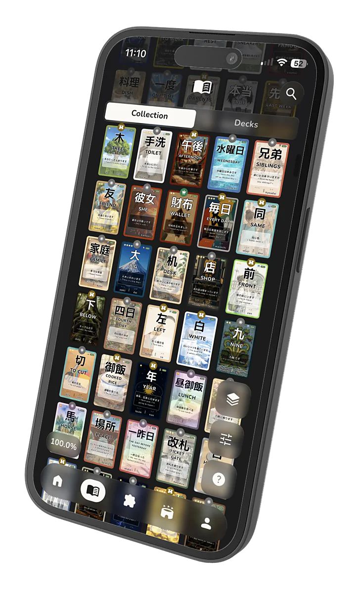
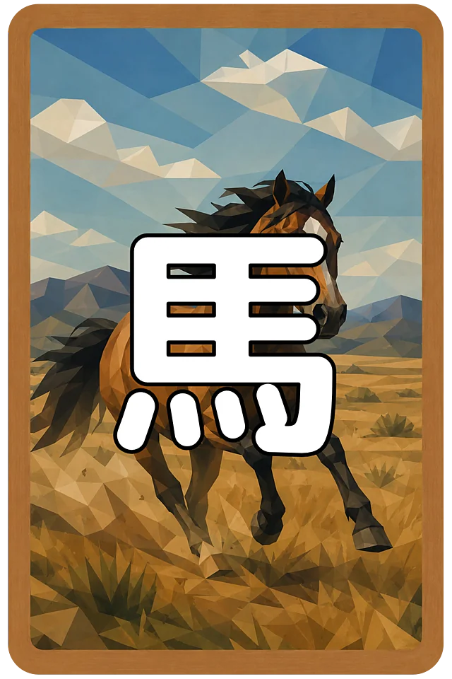
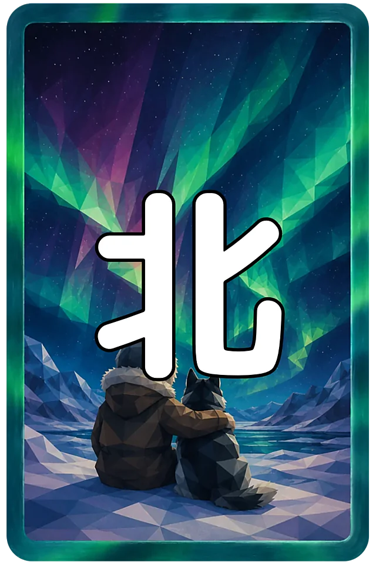
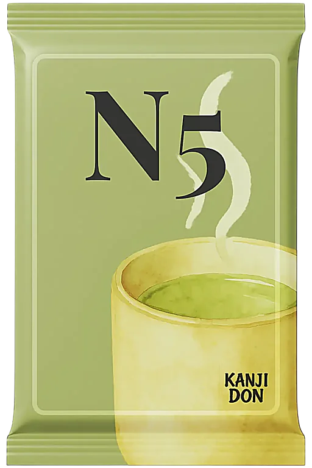

கண்டுபிடி.
திற. கண்டுபிடி.
அடுத்ததைப் பார்த்தவுடன் இன்னொன்றைத் திறக்கத் தோன்றும்.
ஆர்வம் முதல் அடியை எடுக்கிறது. மீதியை நாங்கள் பார்த்துக்கொள்கிறோம்.
 Kanjidon
Kanjidon
மற்ற app-கள் நம்மை வெறுக்கப் போகின்றன.
பல ஆண்டுகளாக ஜப்பானியம் கற்பது என்றால் notebook-ல் குறியீடுகளை நகலெடுத்து, மறுநாள் மறந்து, மீண்டும் முதலில் இருந்து தொடங்குவது என்று நம்மை நம்ப வைத்தார்கள்.
Kanjidon அந்தப் பழைய முறையை
அப்படியே தூக்கி எறிகிறது.
ஒவ்வொரு kanji-யும் ஒரு card ஆகிறது. ஒவ்வொரு card-மும் உன் collection-ல் சேர்கிறது. ஒவ்வொரு புதிய கண்டுபிடிப்பும் உன்னைத் தொடர்ந்து செல்ல வைக்கிறது.
நீ கவனிப்பதற்குள் உண்மையாகவே கற்றுக்கொண்டிருப்பாய்.
வங்கி card தேவையில்லை. விளம்பரம் இல்லை.
நீயும் உன் collection-ன் முதல் kanji-யும் மட்டும்.




ஒரு நொடி நில்.
ஒரே kanji-யை எத்தனை முறை படித்திருக்கிறாய்…
…மறுநாளே மறப்பதற்காக?
01 / உண்மை
பார் என்பார்கள்.
திரும்பச் செய்.
மீண்டும் பார்.
மனப்பாடம் செய்.
கடைசியாகக் கற்றுவிட்டேன் என்று நினைக்கும் நேரத்தில்…
உன் நினைவு அழுத்துவது நீக்கு.
உனக்குத் திறமை இல்லாததால் அல்ல.
மூளை அப்படித்தான் வேலை செய்கிறது.
அங்கேதான்
Kanjidon களமிறங்குகிறது.

02 / தொடக்கம்
உள்ளே அழகான பல kanji இருக்கின்றன.
முதலில் அவை எல்லாம் உனக்கு வேண்டும்.
பிறகு அவற்றைச் சோதிக்கிறாய்.
கடைசியில் அவை மனதில் பதிகின்றன.
03 / கார்டு
உன் நினைவாற்றலைக் கட்டமைக்கிறாய்.


சில உடனே கிடைக்கும்.
சிலவற்றுக்காக வியர்க்க வேண்டும்.
அவற்றை நீ என்றென்றும் நினைவில் வைத்திருப்பாய்.
திற. கண்டுபிடி.
அடுத்ததைப் பார்த்தவுடன் இன்னொன்றைத் திறக்கத் தோன்றும்.
ஆர்வம் முதல் அடியை எடுக்கிறது. மீதியை நாங்கள் பார்த்துக்கொள்கிறோம்.
மூளை மறக்கிறது.
நாங்கள் அதற்கு முன் வருகிறோம்.
நீ மறப்பதற்குள் quiz-களும் SRS-மும் kanji-யை மீண்டும் கொண்டு வருகின்றன.

தனியாக அமைதியாகப் படிப்பதா? மிகவும் எளிது.
எதிராளிக்குச் சவால் விடு. பதிலளி. வெல். kanji-யை reflex ஆக மாற்று.

ஒரு kanji-யை நினைவில் வைப்பது பிரச்சினை இல்லை.
அதை ஒருபோதும் மறக்காமல் இருப்பதுதான் முக்கியம்.
அதற்காகத்தான் Kanjidon இருக்கிறது.
04 / முழு அமைப்பு
உன்னைச் சலிக்க விடாத ஒரு உலகத்தை நாங்கள் கட்டியிருக்கிறோம்.
LIVE
உண்மையான battle. உண்மையான opponent. Real time.


பணிகள்
XP தருவது பணிகள்.
LEAGUE-கள்
உச்சிவரை. பிறகு ஒவ்வொரு மாதமும் leaderboard மீண்டும் தொடங்கும்; அரியணை மறுபடியும் பிடிக்கத் தயாராக இருக்கும்.


STREAK
நாளை மறுநாளும்.
TAMA
Tama-வை நீயே சம்பாதி. பேக்குகள், அவதார்கள், ஃபிரேம்கள்: எதில் செலவழிப்பது என்பதை நீயே முடிவு செய்.

இவை அனைத்திற்கும் நாங்கள் மறைக்காத ஒரே நோக்கம்.
கட்டாயம் என்பதால் அல்ல.
உனக்கு வேண்டும் என்பதால்.


05 / கதைகள்
வரையப்பட்ட கதைகளுக்குள் செல். கேள். படி. மொழிபெயர். பதில் சொல்.
ஒரு café, ஒரு train, எதிர்பாராத message. இங்கே பயிற்சி செய்யும் ஜப்பானியம்தான் நிஜ வாழ்க்கையிலும் உன்னைச் சந்திக்கும்.
நீ ஒரு வாக்கியத்தை மட்டும் கற்பதில்லை.
அடுத்து என்ன நடக்கும் என்று தெரிந்துகொள்கிறாய்.
06 / முத்திரைகள்
முத்திரைகள் உன் ஜப்பானியத்தை மேம்படுத்தாது. அது உன் வேலை.
ஆனால் உன் collection-ல் அவை செமையாக இருக்கும்.


ஒரு card உன் கவனத்தைப் பிடிக்கிறது.
அடுத்தது உனக்குச் சவால் விடுகிறது.
இது album மட்டும் அல்ல. உன் நினைவாற்றலுக்கு இப்போது பின்தொடர ஏதோ ஒன்று கிடைத்திருக்கிறது.
07 / குறுக்கு வழி இல்லை
6,000+ கார்டுகள். உன் முதல் kanji-யிலிருந்து N1 வரை.
16 வகை quiz-கள். எழுத்து, கேட்டு எழுதுதல், shadowing மற்றும் இன்னும் பல.
கதைகள், SRS, பணிகள், battle-கள், புள்ளிவிவரங்கள், JLPT simulation-கள், pack-கள், அதிர்ஷ்டக் கணிப்புகள், முழுமையான grammar course... சுருக்கமாகச் சொன்னால், இப்போது உனக்குப் புரிந்திருக்கும்.
முறை தயாராக இருக்கிறது. பாதை உன்னுடையது.
எவ்வளவு தூரம் எடுத்துச் செல்வது என்பதை நீ முடிவு செய்.


08 / ஆதாரம்
நாங்கள் சொல்வதை நீ நம்ப வேண்டியதில்லை.
‘சும்மா முயற்சி செய்வோம்’ என்று தொடங்கியவர்கள் இப்போது என்ன சொல்கிறார்கள் என்று படி.

18-இல் 1

ஒரு வருடத்தில் ஆயிரக்கணக்கான kanji-கள் உன் வசமாகலாம்.
இல்லையென்றால் இன்னும் இப்படிச் சொல்லிக்கொண்டிருக்கலாம்:
 Scan செய். பதிவிறக்கு. தொடங்கு.
Scan செய். பதிவிறக்கு. தொடங்கு.
iOS மற்றும் Android-ல் இலவசம். வங்கி card தேவையில்லை. உன் முதல் பேக்குகள் காத்திருக்கின்றன.